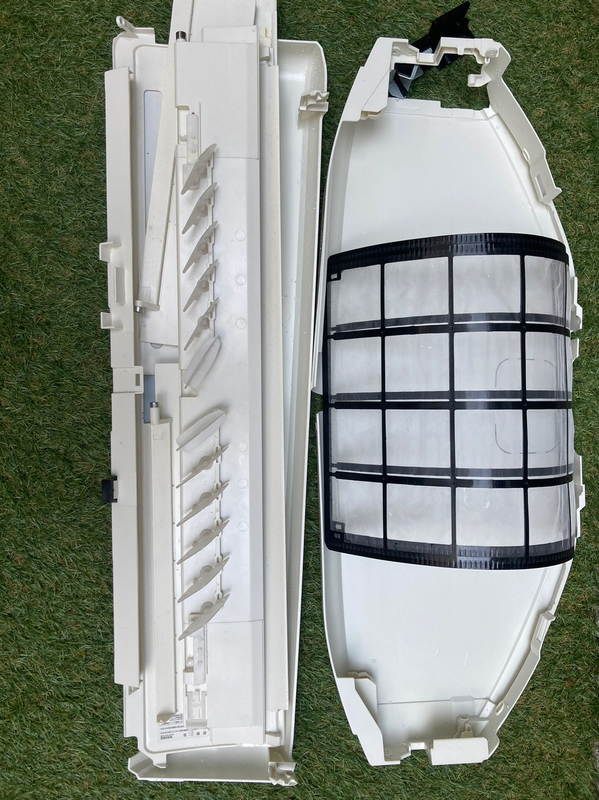

エアコンクリーニングの推奨頻度
一般的なご家庭では、エアコンクリーニングは1〜2年に1回が目安です。 エアコンの内部は、冷房や除湿で発生する結露によって湿気がこもり、カビやホコリが溜まりやすい場所です。1〜2年使うとフィルターの奥や送風ファンに汚れが付着し、においや効きの悪さの原因になります。
次のようなご家庭は汚れるスピードが速いため、年1回のクリーニングを目安にすると安心です。
- ペットを飼っている（毛やにおいが内部に溜まりやすい）
- 室内でタバコを吸う（ヤニ汚れが付着しやすい）
- 毎日長時間つけっぱなしにする（汚れが蓄積しやすい）
- 小さなお子さまやアレルギーが気になるご家族がいる
大阪市内のご家庭でも、夏場にフル稼働させるお住まいは多く、シーズン前後のクリーニングがおすすめです。「最近エアコンから嫌なにおいがする」「冷えが弱くなった」と感じたら、頻度の目安にかかわらず一度内部を確認するサインです。

エアコンクリーニングの費用（キレイシアの料金）
エアコンクリーニングの費用は、エアコンの種類によって変わります。 キレイシアの家庭用エアコンの料金（すべて税込）は次のとおりです。
| エアコンの種類 | 料金（税込） |
|---|---|
| 通常エアコン（壁掛け） | 9,000円 |
| お掃除機能付きエアコン | 16,000円 |
| 窓用エアコン | 16,000円 |
お掃除機能付きエアコンが通常エアコンより高いのは、内部の構造が複雑で、分解・洗浄・組み立てに手間がかかるためです。ご自宅のエアコンがどちらか分からない場合は、お問い合わせの際に型番をお伝えいただければご案内できます。なお、店舗や事務所の業務用エアコンにも対応しています。正式な料金はサービス一覧ページまたはお見積りでご確認ください。
関西エリアの料金相場の目安
「他社と比べてどうなの？」という方のために、関西エリアの一般的な相場の目安をまとめました。 業者やエアコンの状態によって幅がありますが、おおよその目安として参考にしてください。
| エアコンの種類 | 相場の目安（関西エリア） |
|---|---|
| 通常エアコン（壁掛け） | 8,000〜13,000円 |
| お掃除機能付きエアコン | 15,000〜22,000円 |
| 窓用エアコン | 13,000〜18,000円 |
※上表は関西エリアの一般的な相場の目安です。正式料金はサービス一覧ページまたはお見積りでご確認ください。安さだけで選ぶと「内部の分解洗浄までは含まれていなかった」というケースもあるため、作業範囲と料金の内訳を確認しておくと安心です。
料金が変わる3つのポイント
エアコンクリーニングの料金は、主に「エアコンの種類・台数・設置状況」で変わります。 事前に知っておくと、見積もりの内容を理解しやすくなります。
- エアコンの種類： 通常エアコンか、お掃除機能付きか、窓用かで料金が変わります。分解の手間が多いほど費用は上がります。
- 台数： リビングと寝室など複数台をまとめてご依頼いただくと、台数や設置状況によってはお得になる場合があります。
- 設置状況： 天井に近い高所への設置や、家具で囲まれていて養生に手間がかかる場合などは、作業内容が変わることがあります。
あると安心なオプション
基本のクリーニングに加えて、用途に合わせて選べるオプションをご用意しています（すべて税込）。
| オプション | 料金（税込） |
|---|---|
| 消臭抗菌コート | 2,000円 |
| 室外機洗浄 | 3,000円 |
| ドレンパン分解 | 3,000円 |
| 完全分解洗浄 | 8,000円 |
においが気になる方には消臭抗菌コート、汚れがひどく内部までしっかり洗いたい方には完全分解洗浄がおすすめです。どのオプションが必要かは、現地で状態を確認しながらご提案しますので、まずはお気軽にご相談ください。
対応エリアと地元密着のサポート
キレイシアの本社は大阪市城東区にあります。 大阪市内全域から東大阪市など近隣エリアまで対応し、地元は移動の負担が少なく日程調整がしやすいのが強みです。「夏本番の前に間に合わせたい」「急に冷えが悪くなった」といったご相談にも、地元ならではのフットワークで対応します。
対応エリアは城東区を中心に、東成区・中央区など大阪市内全域、東大阪市をはじめとする近隣エリア、さらに大阪・京都・兵庫・奈良まで広く承っています。お見積り・ご相談は無料です。LINEなら写真を送っていただくだけで、おおよそのご案内もしやすくなります。